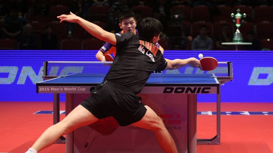

Table Tennis
Classroom Tournament Leadership board
| Position |
Name |
Wins |
Losses |
| 1 |
Alice |
10 |
2 |
| 2 |
Bob |
8 |
4 |
| 3 |
Charlie |
7 |
5 |
| 4 |
David |
20 |
5 |
| 5 |
Emma |
18 |
3 |
| 6 |
Frank |
22 |
4 |
Rules of Table Tennis
- A match is played to 11 points,
and a player must win by at least 2 points.
- Players serve two points each, alternating serves.
- If the score reaches 10-10, players alternate serves
every point until one player leads by 2 points.
- The ball must bounce once on each side of the table
before being returned.
- Players switch sides after each game, and in the final game, they
switch sides when one player reaches 5 points.
Official rules can be found in the offi
cial website here.
Game SetUp :
The game should be set up as per Table tennis tournament at Liga pro
